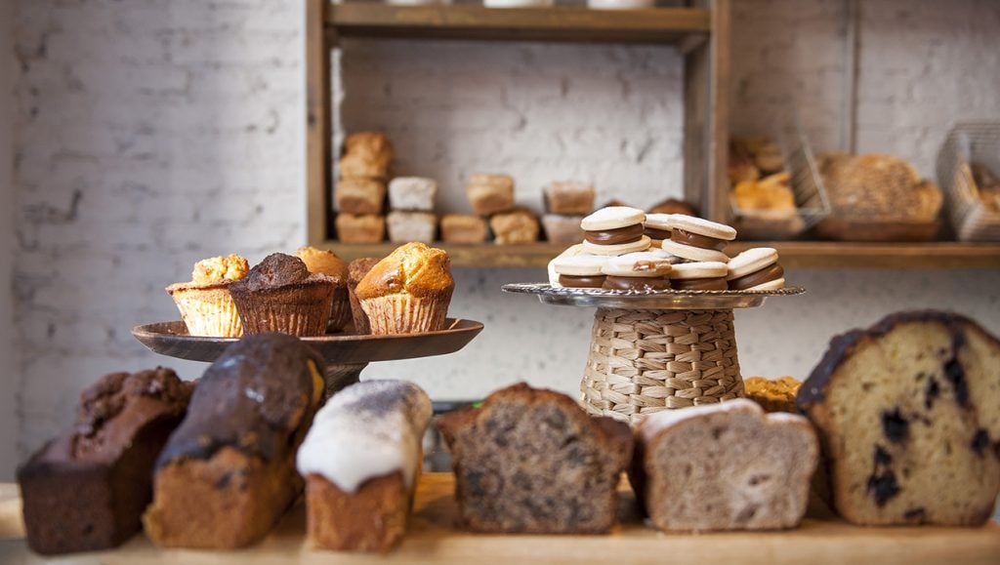

Historia
Desde el primer día, Isabella y su abuela trabajaron incansablemente, horneando panes y dulces que
pronto se convirtieron en los favoritos del pueblo. Los aromas de la panadería llenaban las calles y
atraían a todos los vecinos, creando un ambiente cálido y familiar.
Con el paso de los años, "La Dulce Esperanza" evolucionó. La hija de Isabella, Emilia, se unió al
negocio, trayendo consigo nuevas ideas y recetas, pero siempre manteniendo el toque artesanal y el
cariño en cada creación. Juntas, madre e hija transformaron la panadería en un lugar donde tradición
y modernidad se encuentran.
Hoy en día, "La Dulce Esperanza" no solo es un negocio, es un legado. Cada día, continuamos con la
misma pasidedicación que Isabella tuvo desde el principio, ofreciendo productos frescos y
deliciosos. Te invitamos a ser parte de nuestra historia, a disfrutar de nuestras creaciones y a
sentirte como en casa.
